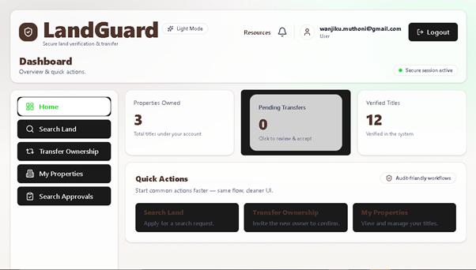
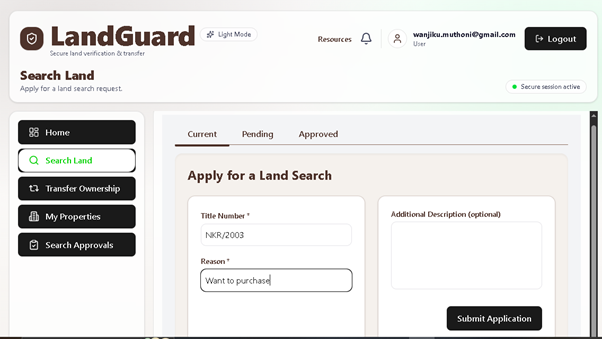
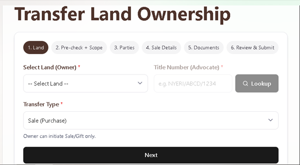

01
FINAL YEAR PROJECT • WEB APPLICATION
Land Verification & Ownership Transfer Management System
A web-based system developed to support land ownership verification, official land searches and ownership transfer workflows. The project involved relational database design, software development, testing and system documentation.
React
FastAPI
PostgreSQL
SQLAlchemy

Dashboard
Land Search
Ownership TransferSelected screens from the LandGuard system. Click an image to view it larger.